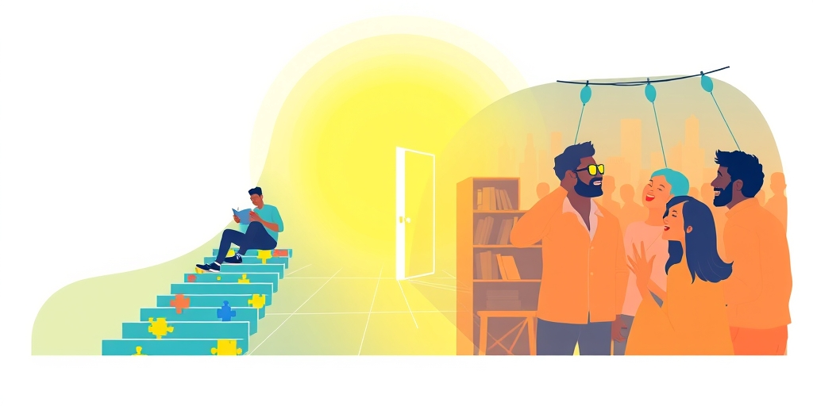

小汪老师的成长洞察 · 属于你的成长专栏
一个瑞士社恐医生在书房里发明了内向与外向，用来防御那个让他疲惫的外部世界。一百年后，这两个词逃出学术论文，洗劫了全世界的相亲软件、团建破冰游戏和便利店咖啡杯。这场奇幻漂流最讽刺的地方在于：它本来是一把理解人性的精细手术刀，最后被所有人用成了停止理解彼此的快捷标签。
1921年，荣格在《心理类型》里写下内向与外向的定义时，他做的不是客观分类，而是自我辩护。荣格本人是个重度内向者，社交让他精疲力尽，独处时他才感到活着。那个时代，弗洛伊德的精神分析圈子是外向者的天下——谁能说会道、谁能拉拢追随者，谁就掌握话语权。荣格感到自己被边缘化，不是因为他的理论不够好，而是因为他不够吵。
于是他构建了一整套理论，核心只有一句话：心理能量指向内部不是病，指向外部也不是优越。内向者被自己的内心世界、思想、意象所吸引，外部世界对他们是一种消耗。外向者被他人的存在、外部事件和行动所激活。这个定义与今天流行的“话多话少”版本几乎完全相反——荣格说的内向不是怕社交，而是被内在世界深深吸引，以至于外部刺激显得多余而嘈杂。
荣格还反复强调另一个点，后世却选择性失聪：没有人是纯粹的内向或外向，每个人都是混合体，只是比例不同。这个光谱概念在一百年后才被重新发现。在荣格说这话的时候，没人听进去。在MBTI把世界劈成E和I两个阵营的时候，更没人听进去。
如果说荣格给了内向/外向一个哲学框架，汉斯·艾森克在1960年代给了它一个硬核的生物学基础。他的核心假说大胆而简洁：内向者和外向者的大脑皮质唤醒水平天生不同。内向者的基线唤醒水平更高——他们的大脑本来就“够吵了”，所以外部刺激对他们来说是加倍刺激。外向者的基线唤醒水平更低——他们需要外部刺激来把大脑唤醒到舒适水平，所以渴求社交、冒险和新鲜环境。
为了验证这个假说，艾森克做了大量实验。其中最著名的是“柠檬汁测试”：在舌头上滴几滴柠檬汁，内向者产生的唾液量显著多于外向者。柠檬汁是一种感官刺激，内向者对刺激的反应更强——连唾液腺都有性格立场。这个发现把一个模糊的性格分类变成了可测量的生物差异，为内向/外向提供了神经生理学的实证基础。
但这个发现有一个被忽略的推论，比实验本身更重要：内向不是一种“缺失”，它是一种不同的神经系统配置。不是对外界没反应，是对外界反应太强了。内向者不是麻木，是过于敏感。这个视角本来可以彻底扭转社会对内向的负面评价，但它被埋没了几十年，直到苏珊·凯恩用一场TED演讲重新把它挖出来。

进入21世纪，对内向/外向最流行的解释变成了能量模型：内向者通过独处恢复能量，外向者通过社交恢复能量。这个模型的贡献巨大。它把内向从“不爱说话”“胆小”“孤僻”的负面标签中解放出来，重新定义为一个中性甚至积极的能量管理策略。苏珊·凯恩2012年的TED演讲《内向者的力量》观看量超过三千万，无数人第一次感到“原来我不是怪人，我只是属于另一个类别”。
但这个模型也制造了三种误读。第一种：它暗示内向者不需要社交。不对，内向者需要社交，只是社交的消耗更大，所以需要更高质量的社交来值回票价。第二种：它把外向者描述成能量无限的人。不对，外向者在长期独处中也会枯竭，只是燃料类型不同。第三种误读最隐蔽：它制造了一种道德化的二分——“内向者是深度思考者，外向者是肤浅的社交动物”。这个叙事本身就是内向者在社交战场上的一种弱势反转策略，用一种新的优越感来补偿旧的劣势感。
能量模型解放了内向者，也无意中给了他们一件新的武器。而武器的另一面，永远是盾牌。
MBTI从美国企业管理培训工具变成东亚年轻人的社交身份证，是21世纪最精彩的民间传播案例之一。在韩国，MBTI出现在相亲简介、咖啡杯和便利店零食包装上。在中国的交友软件里，写不写MBTI决定了别人对你的第一印象。在团建现场，“你是E还是I”成了一个比“你是什么星座”更高效的陌生人破冰机制。一个诞生于瑞士书房的心理学概念，最终变成了年轻人身上最显眼的社交条形码。
这个现象有几个层次的讽刺。讽刺一：荣格本人是重度I人，他发明这个概念的部分动机是“I人需要理论武器来防御E人主导的世界”。现在这个概念变成了所有人的公共游乐场，E人和I人在上面互相调侃、抱团取暖。讽刺二：MBTI的科学性在学术界一直受到严重质疑，心理学界几乎放弃了它，但它在民间的生命力超越了所有被学术界认可的替代品。这说明人在找的不是最准确的性格测量工具，而是最高效的自我叙事的语言。
讽刺三最尖锐：“E人”和“I人”的标签，本来是为了描述差异，但在使用中变成了制造差异的工具。I人抱团吐槽E人太吵，E人抱团调侃I人太闷，两边都在强化同一个刻板印象，然后用这个刻板印象来为自己“不被对方理解”提供合法性。讽刺四最被忽略：大多数人在艾森克的测试中处于中间值，即“中向者”。但没人会说“我是中向者”。因为中向者没有叙事张力。灰色地带没有故事可讲，所以被全民叙事系统自动过滤掉了。
追溯百年历史之后，真正值得问的不是“内向和外向哪个更好”，而是“为什么人类对这个分类如此上瘾”。一个可能的答案：在社会复杂度爆炸的时代，我们需要最简短的标签来判断“这个人跟我是不是一路的”。星座、MBTI、九型人格、八字——它们的功能不是精确测量，是降低社交信息处理的成本。内向/外向之所以成为这个赛道里的冠军选手，是因为它比星座有更多的“科学背书感”，比九型人格更容易瞬间判断，比八字更去文化门槛。
第二个可能的答案：这个二分法满足了人类对“自我叙事”的深层需求。“我是I人”不是一个诊断，是一个故事——一个让你理解你为什么在团建中感到精疲力尽、为什么你不喜欢打电话的故事。人格标签的真正价值不在科学精度，在它让你觉得“原来我不是怪人，我只是属于另一个类别”。
第三个答案最讽刺，也最重要：内向/外向这个概念的终极功能，可能不是帮我们理解彼此，而是帮我们停止尝试理解彼此。“他是E人，我是I人，所以我们互相不理解是合理的”——这个二分法在促进包容的同时，也在为放弃理解提供一块干净的免责牌。我们这么执着于把自己分成E和I两拨人，是不是恰恰因为我们不想花时间去真正理解每一个具体的人？
写给你的话
下次你说“我是I人”的时候，可以多想一层：这句话是在描述你的能量来源，还是在为你不想理解某个E人找借口？是在帮你接纳自己，还是在帮你拒绝跨越差异？荣格发明内向与外向，是为了让内向者被看见。一百年后，这两个词被用得最熟练的方式，却是让每个人安心地待在自己的标签里，不再费力去看标签后面那个具体的人。这个标签给了你归属感，也给了你一个不越界的理由。而荣格泉下有知，大概会推一推他的圆框眼镜，说：我当初写的，可不是这个意思。
小汪老师的成长洞察 · 属于你的成长专栏